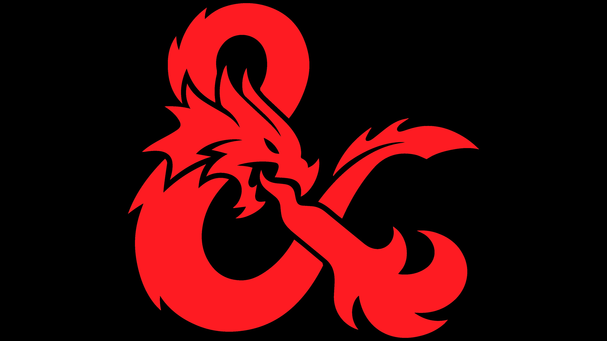
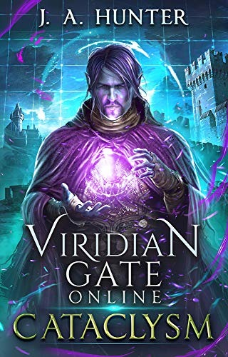

I do a lot of things in my free time. This includes all the things I mentioned on my main page, but I also play soccer, ride my bike, play D&D, and watch a lot of Star Wars things. Since I don't really have picture of those on this computer, though, I'm just going to put up pictures of the games I spend a lot of time on and books I like (or series).
This is one of the games I have spent a lot of time playing recently. It's a Star Wars game that takes place after Order 66. The gameplay and storyline are both very good, and I really like it. Gets a place here because I'm playing it a lot right now.
If you don't know what this is, it is the logo for Dungeons and Dragons (D&D). It is a tabletop RPG that I really love, and I spend a lot of time playing it and discussing it with friends. It is one of my favorite pastimes, and has brought me closer with a lot of my friends.
This is the first book in one of my favorite series: Viridian Gate Online. It is a book about life in a VRMMORPG after a cataclysmic asteroid drives them there. Being a VRMMORPG, it has both a lot of RPG and video game elements that makes the book a personal favorite, as those are some of my favorite things. Great book series.